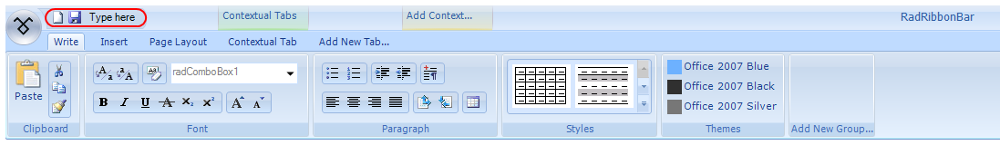
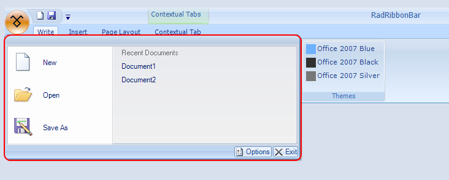
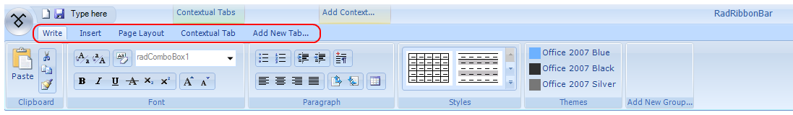
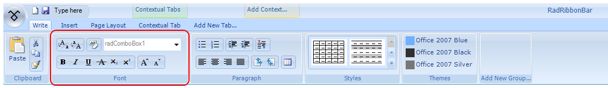
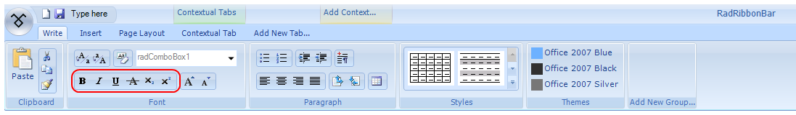
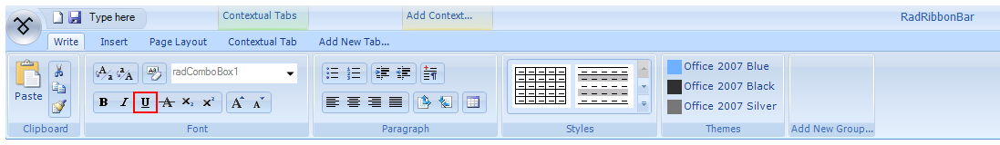
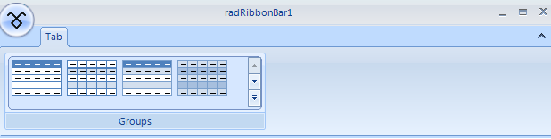
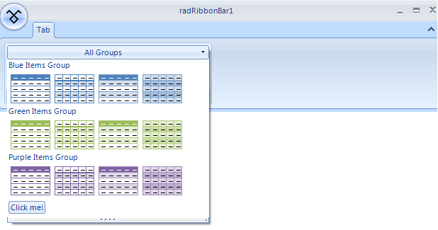

Structure of RadRibbonBar
The Telerik RadRibbonBar control has a very complex structure. You can add a variety of constituent controls to customize the Telerik RadRibbonBar.
Quick Access Toolbar
The Quick Access Toolbar is an area at the top of the Telerik RadRibbonBar, above the tabs:
The Quick Access Toolbar can contain the same elements as the RadMenu:
Menu items, displayed as either images, text, or both
Combo boxes
Custom items
Separators
Start Menu
The Start Menu is a menu that is displayed when you click on the Office Button in the upper left corner of the Telerik RadRibbonBar:
The Start Menu includes two columns of items, each of which can contain the same elements as the RadMenu:
Menu items, displayed as either images, text, or both
Combo boxes
Custom items
Separators
Tabs
The tabs are the first level of organization of the main part of the Telerik RadRibbonBar. Tabs are typically used to split the functionality of an application into major areas.
The drop-down arrow to the right of the tabs opens a menu listing all of the tabs on the Telerik RadRibbonBar. Selecting a tab from the menu makes it the active tab.
Contextual Tabs Groups
Contextual Tab Groups provide a way to organize related tabs. They are often used to group tabs that apply to a specific object in your application.
In the screenshot above, Appearance__and __Data are contextual tab groups. Their width indicates the tabs that they contain, so that the Appearance__contextual tab group includes the __Formatting and Layout__tabs, and the __Data contextual tab group includes the Spelling__and __Insert__tabs. Color is also used to unify a contextual tab group with its contained __Ribbon Bar Groups. The tabs that belong to contextual tab groups are always placed to the right of other tabs on the Telerik RadRibbonBar.
Ribbon Bar Groups
Each tab hosts one or more groups. A group is a container for the other containers and individual functional elements. Ribbon Bar Groups can individually collapse if there is not enough room to display all of them.
In the screenshot above, Clipboard, Font, and Paragraph are Ribbon Bar Groups placed on the Write tab.
Button Groups
Ribbon Bar Groups may (but are not required to) contain one or more button groups. A button group is a container that can contain other nested button groups or individual functional elements. Button groups can be oriented horizontally (containing a horizontal row of elements) or vertically (containing a vertical column of elements).
Elements
Elements are the individual functional pieces of the Telerik RadRibbonBar. Elements can be contained directly within Ribbon Bar Groups or within button groups. Ribbon Bar Groups and button groups can contain a variety of elements:
Button elements, displayed as either images, text, or both
Drop-down button elements
Split button elements
Repeat button elements
Toggle button elements
Check box elements
Galleries
A gallery is a special type of element that is designed to allow the user to select visually from among a number of choices.
A gallery may be displayed in either collapsed or expanded view.
In its default collapsed view, a gallery shows a single row of choices, as well as up and down arrows for scrolling
to other rows of choices and a drop-down arrow for switching to expanded view.
In its expanded view, a gallery shows all of its choices at one time, a filter selection bar at the top, and tools at the bottom.